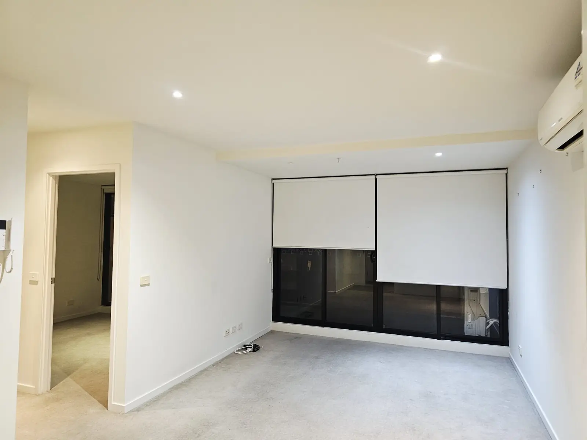

NDIS
cleaning
Home cleaning for NDIS participants, planned around your routine.
About NDIS cleaning Call Tactix
Call Tactix
Cleaning before you hand back the keys, quoted for your property and your move-out date.
Also called bond cleaning or vacate cleaning. Every cleaner is police checked.

In Victoria, you need to leave a rental reasonably clean and in the same condition as when you moved in, allowing for fair wear and tear. If you don't, the rental provider can claim cleaning costs from your bond.
The rental provider or agent fills in the exit condition report within 10 days of the lease ending. They compare it against the entry condition report, and you're entitled to be there or to get a reasonable chance to attend.
If you signed your lease on or after 29 March 2021, the rental provider can only ask for a professional clean in limited cases, such as when the property was professionally cleaned before you moved in. Check your lease and entry condition report before you arrange one.
This is a summary, not legal advice. Consumer Affairs Victoria has the full rules.
End-of-lease jobs vary a lot. A one-bedroom apartment left tidy is a different job to a family home after five years. These details help us quote accurately:
We confirm what's covered before the clean goes ahead.


A few things make the clean go faster and leave nothing for the inspection:
Yes. Some people call it a bond clean or a vacate clean. It's the clean done before you hand back the keys, so the property matches the condition report.
It depends when you signed. For leases signed on or after 29 March 2021, the rental provider can only ask for a professional clean in limited cases. Check your lease and entry condition report.
As soon as you know your move-out date. That leaves time to quote and agree a time before your inspection.
We clean across Melbourne. Tell us the suburb when you get in touch and we'll confirm we can get to you.
Home cleaning for NDIS participants, planned around your routine.
About NDIS cleaningCleaning for houses, apartments and townhouses, planned around the rooms you want done.
About house cleaningTell us your suburb, move-out date and the size of the property. Call or email, whichever suits you.